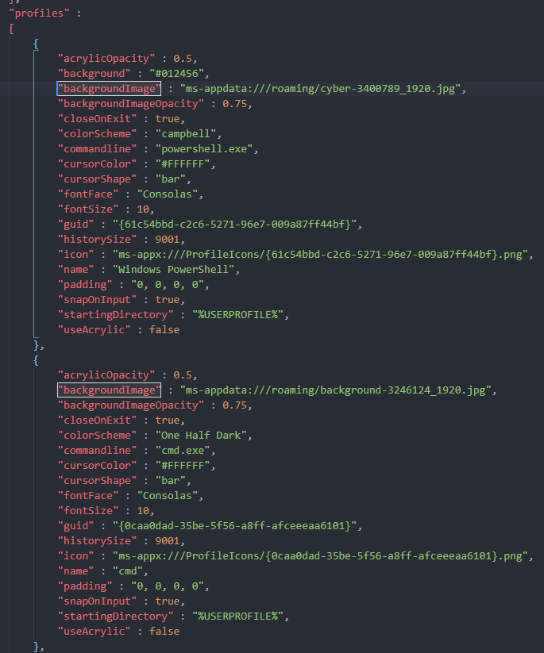
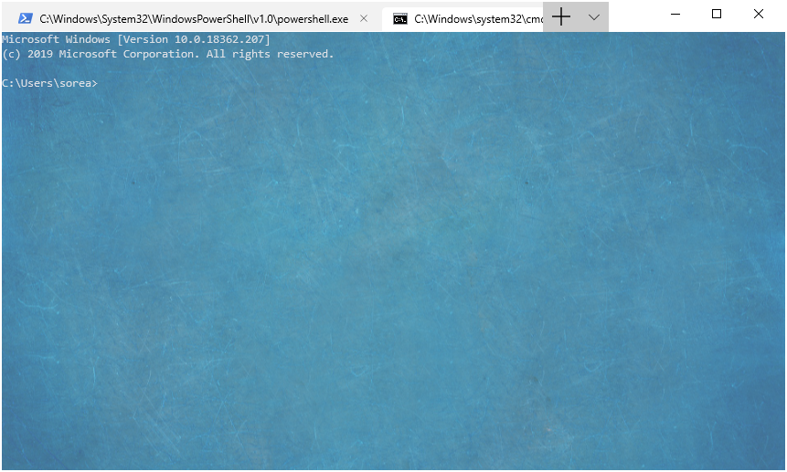
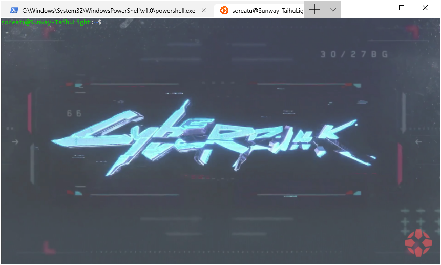
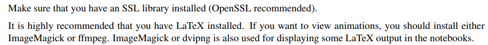
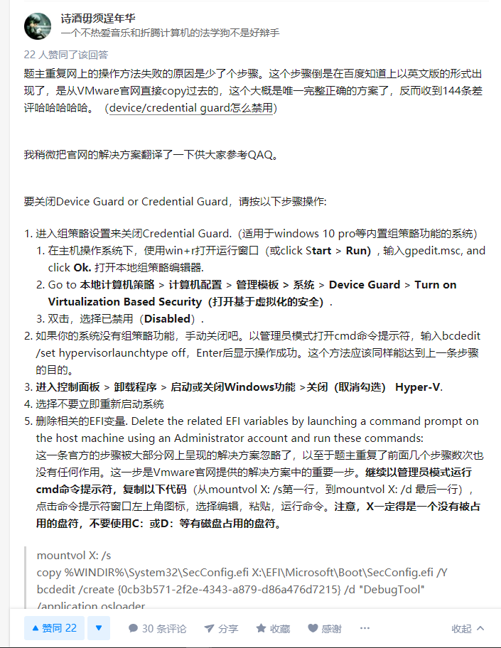

Various setupsPythonVScode -- Setting up a Python Development Environment pip换源(win10)pip换源(Linux)Install the Jupyter NotebookWindows TerminalDownloadBackground imageAdd wsl-ubuntu shellInstall SageMath on Manjaro(vm)PrepareRefVPS speedtestMD 转 PDF with LatexVMware Workstation 与 Device/Credential Guard 不兼容Solution
参考：https://www.youtube.com/watch?v=-nh9rCzPJ20&list=PL-osiE80TeTt2d9bfVyTiXJA-UTHn6WwU
参考：https://blog.csdn.net/artprog/article/details/75632723
~/.pip/pip.conf
1[global]2index-url = https://pypi.tuna.tsinghua.edu.cn/simple
参考：https://jupyter.org/install
在Microsoft Store里面搜索Terminal，直接下载就行。
参考https://www.howtogeek.com/426346/how-to-customize-the-new-windows-terminal-app/
随便找几张图片(也可以是gif)，放到目录C:\Users\username\AppData\Local\Packages\Microsoft.WindowsTerminal_8wekyb3d8bbwe\RoamingState下(背景图片存放的目录，别的地方也可以)。
打开Terminal的profile.json文件（打开Terminal，快捷键Ctrl+,，或者就在刚刚那个目录下），在相应的profiles处添加以下三条配置：
xxxxxxxxxx31"backgroundImage" : "ms-appdata:///roaming/yourimage.jpg",2"backgroundImageOpacity" : 0.75,3"backgroundImageStrechMode" : "fill",
重新打开Terminal即可看到背景已经变了。 
参考https://windowsloop.com/add-ubuntu-to-windows-terminal/
我的配置：
xxxxxxxxxx211 {2 "acrylicOpacity" : 0.5,3 "backgroundImage" : "ms-appdata:///roaming/paper-1990111_1920.jpg",4 "backgroundImageOpacity" : 0.75,5 "backgroundImageStrechMode" : "fill",6 "closeOnExit" : true,7 "colorScheme" : "Solarized Light",8 "commandline" : "wsl.exe ~",9 "cursorColor" : "#FFFFFF",10 "cursorShape" : "bar",11 "fontFace" : "Consolas",12 "fontSize" : 10,13 "guid" : "{62632778-7f83-435a-956e-7b87a9bdeeaf}",14 "historySize" : 9001,15 "icon" : "F:\\icons\\ubuntu-icon.png",16 "name" : "ubuntu",17 "padding" : "0, 0, 0, 0",18 "snapOnInput" : true,19 "startingDirectory" : "%USERPROFILE%",20 "useAcrylic" : false21 }效果：


sudo pacman -S opensslsudo pacman -S sagemathhttp://doc.sagemath.org/pdf/en/installation/installation.pdf
1wget -qO- bench.sh | bash1<script type="text/javascript" src="http://cdn.mathjax.org/mathjax/latest/MathJax.js?config=TeX-AMS-MML_HTMLorMML"></script>2<script type="text/x-mathjax-config">MathJax.Hub.Config({ tex2jax: {inlineMath: [['$', '$']]}, messageStyle: "none" });</script>System: Win10 Pro
Winver: Version 1903 (OS Build 18362.295)
VMware报错:VMware Workstation and Hyper-V are not compatible. Remove the Hyper-V role from the system before running VMware Workstation.
参考https://www.zhihu.com/question/64511903
